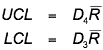

Detecting changes to process variability
A control chart of sample means is used to detect shifts in the 'centre' of a process. In a similar way, a control chart of sample ranges is used to assess whether the process variability has changed.
Control chart for range
Control charts for ranges are constructed and interpreted in a similar way to control charts for means — there is very little chance of observations breaching the control limits if the process is in control — but the control limits are obtained in a different way.

where  is
again the average of the training sample ranges. The constants D3 and D4 depend
on the common training sample size n and
are tabulated below.
is
again the average of the training sample ranges. The constants D3 and D4 depend
on the common training sample size n and
are tabulated below.
| Sample size, n | D3 | D4 |
|---|---|---|
| 2 | 0 | 3.267 |
| 3 | 0 | 2.575 |
| 4 | 0 | 2.282 |
| 5 | 0 | 2.115 |
| 6 | 0 | 2.004 |
| 7 | 0.076 | 1.924 |
| 8 | 0.136 | 1.864 |
| 9 | 0.184 | 1.816 |
| 10 | 0.223 | 1.777 |
Note that the lower control limit is zero for sample sizes of 6 and lower.
Example